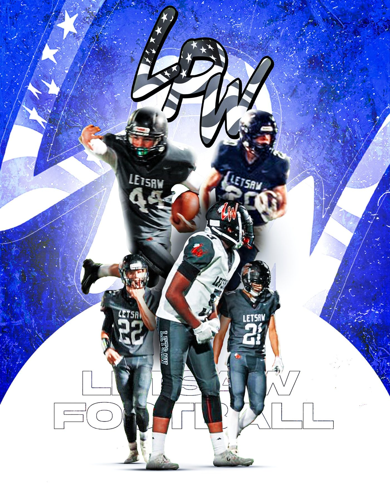
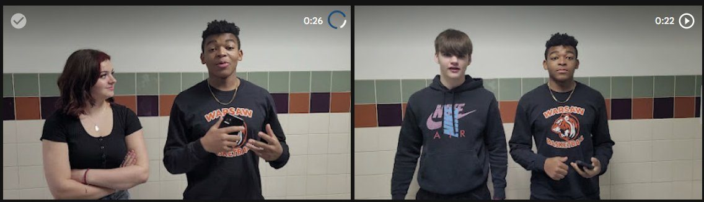
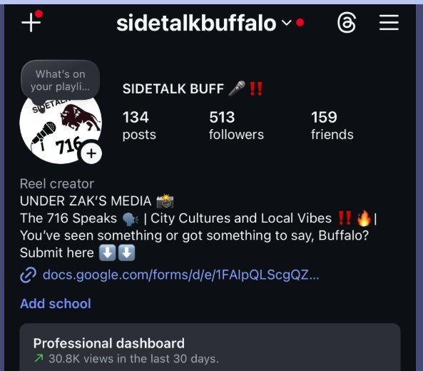

Content creator focused on storytelling, interviews, and capturing real moments that reflect people's experiences. Building a body of work in video, social, and street-style journalism.
Scroll// Reach reflects content across personal & collaborative platforms — Instagram, TikTok, and Tiger Nation.
"My background in foster care isn't a setback — it's the lens that lets me see the human experience the way I do."
I'm a content creator focused on storytelling, interviews, and capturing real moments that reflect people's experiences. My path hasn't been straightforward — I grew up in the foster care system before being adopted with my siblings, and that shaped how I see people, connection, and perspective.
That background is a big part of why I create. From building content through Tiger Nation in high school to working on interviews, street-style videos, and creative shoots today, I've always been drawn to giving people a voice and telling stories that feel honest.
Being named a recipient of the Strome Family Foundation Scholarship — a process focused entirely on personality, perspective, and presentation — validated everything I'd built. It proved the work I do isn't just personal. It's something I can carry into any room, any project, any city.
Visual narratives focused on emotion, pacing, and composition. From dialogue-free pieces to feature documentary work, I shape footage into stories that hold attention.
Conversation-driven storytelling — fashion designers, models, alumni, community voices. Live coverage and structured features built around real questions.
Built Tiger Nation from zero. Now creating digital content across the city — events, podcasts, brand shoots, and street interviews built for the way people actually watch.
The student media brand I founded, ran, and edited end-to-end through high school — interviews, podcasts, sports graphics, and event coverage built from scratch.
"It started with a camera and a question — could a high school have its own media room?"
I helped create and edit content focused on teacher interviews, student perspectives, and school events. Most pieces stayed around 2–3 minutes, designed for the way students and teachers actually watch.
I became known for the editing — short-form videos, podcast-style interviews, and custom sports graphics for basketball and football. Tiger Nation gave my peers a platform. It gave the community a voice. And it gave me the foundation for everything I'm doing now.


Editing under pressure. Posting consistently. Showing up on camera. Building visuals that make people feel seen. The same instinct that earned me a place in the Strome Family Foundation Scholarship finals — and the same instinct I bring into every project now.
Street-style interview content with the Buffalo arm of the Sidetalk format — quick takes, real reactions, city-cultural vibes. A new lane that pushed me into fast-paced, on-the-fly content creation.
Follow @sidetalkbuffalo ↗
A range of work across video storytelling, interviews, and social content — real moments, strong visuals, and authentic perspectives across different environments.